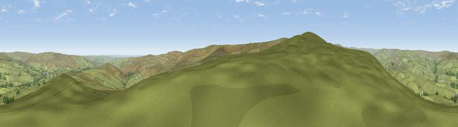

Viewpoint near Stanhope
#9914 in England · top 23% of its area beats it · near StanhopeWhere it is
The exact computed spot (NY 96375 35625). Click the marker for map links.
The view, rendered

A 360° render of this exact spot computed from the terrain model, tree cover and land cover — summer colours, afternoon light, calibrated against photographs of famous viewpoints. Real trees, hedges and buildings will differ in detail.
The panorama
Grey silhouette: terrain skyline in each direction (720 bearings, Earth curvature and refraction included). Dashed green: skyline with trees (+15 m) and buildings (+8 m) as obstacles. Blue strip: how far the ground is visible on each bearing.
Where the view opens
Wedge length = distance to the farthest visible ground on that bearing (vegetation-aware). Rings at 10, 25 and 50 km.
What fills the view
97% grassland · 2% woodland
Angular shares of the visible panorama (visual magnitude), not map area. Landscape diversity 0.06 (0–1 Shannon).
Key numbers
More beautiful places nearby
The staircase of upgrades: each row has a higher view potential than everything closer. Driving times are estimates from straight-line distance, calibrated against real road routing — check an actual route before setting out.
| Place | Direction | Drive | Score |
|---|---|---|---|
| Raven Seat | S · 3 km | ~8 min | 68.5 |
| Viewpoint c10644_7960 | SSE · 4 km | ~9 min | 69.6 |
| Viewpoint near Frosterley | SE · 5 km | ~11 min | 70.6 |
| Collier Law | NE · 8 km | ~16 min | 71.7 |
| Viewpoint near Eggleston | SSE · 13 km | ~23 min | 76.0 |
| Pontop Pike | NE · 25 km | ~41 min | 77.8 |
| Little Dun Fell | W · 26 km | ~42 min | 78.4 |
| Cross Fell | W · 28 km | ~44 min | 78.7 |
54.71562, -2.05779 · source: screening · position refined by local search. Computed location — check access rights before visiting.